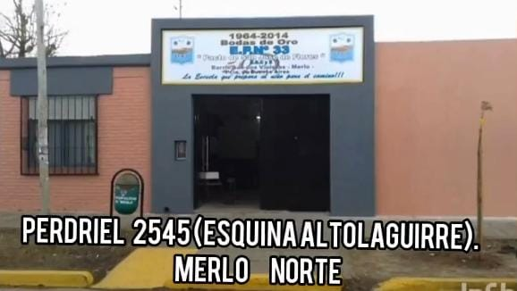

🤝
Respeto
Promovemos vínculos basados en el respeto, la escucha y la convivencia.
"Pacto de San José de Flores"

La Escuela Primaria N.º 33 "Pacto de San José de Flores" forma parte de la comunidad de Merlo Norte.
Nuestro objetivo es acompañar a cada estudiante durante su recorrido escolar, promoviendo el aprendizaje, el respeto, la convivencia y el trabajo conjunto con las familias.
La escuela desarrolla distintas propuestas educativas, culturales, deportivas y comunitarias que buscan generar experiencias significativas para nuestros alumnos.
Valores que forman parte de nuestra comunidad educativa.
Promovemos vínculos basados en el respeto, la escucha y la convivencia.
Trabajamos para que cada estudiante encuentre su lugar dentro de nuestra escuela.
Acompañamos el desarrollo de conocimientos, habilidades y nuevas experiencias.
Escuela y familias trabajando juntas para acompañar a nuestros alumnos.
Nuestra institución lleva con orgullo el nombre "Pacto de San José de Flores".
La identidad de nuestra escuela está representada también por su escudo y los colores que acompañan a nuestra comunidad educativa.